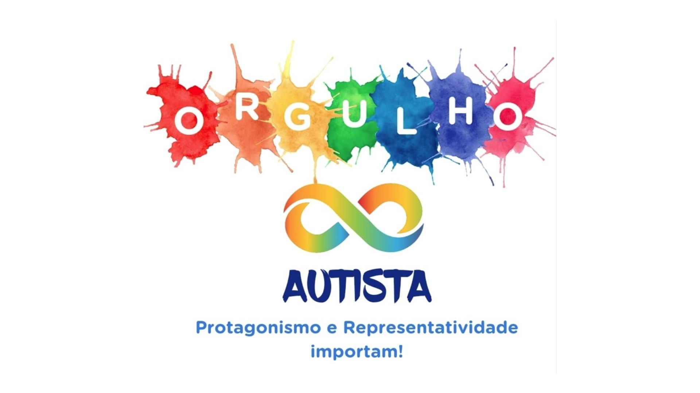

Bem-vindo ao Dia do Orgulho Autista

Este site é um espaço para celebrar a neurodiversidade, promover o respeito às pessoas autistas e valorizar as diferenças que tornam cada ser humano único.
Em 18 de junho, comemoramos mais do que uma data: celebramos a identidade autista, a autoaceitação e a luta por uma sociedade mais inclusiva.
Por que essa data é importante?
O Dia do Orgulho Autista é uma oportunidade de mostrar ao mundo que o autismo não é uma falha a ser corrigida, mas uma forma válida de estar no mundo.
o invés de focar em deficiências, celebramos habilidades únicas, formas diferentes de pensar e o direito de ser quem se é.
Você sabia?
- Autismo não é doença, é uma condição neurodivergente.
- O símbolo do infinito representa a diversidade infinita de experiências autistas.
- O movimento começou em 2005 e já é celebrado em diversos países.
“Respeitar as diferenças é o primeiro passo para a inclusão.”